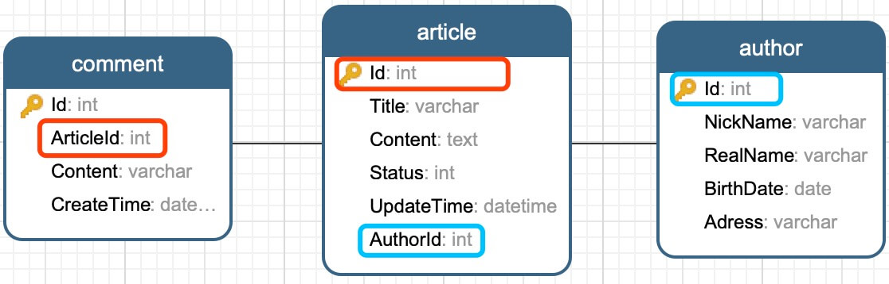
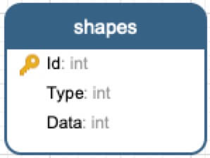

Dapper 全攻略
1. 简介
Dapper是.NET下一个轻量级的ORM框架，它和Entity Framework或Nhibnate不同，属于轻量级的，并且是半自动的。也就是说实体类都要自己写。它没有复杂的配置文件，一个单文件就可以了。Dapper通过提供IDbConnection扩展方法来进行工作。
Dapper没有定义特定的数据库要求，它支持所有ADO.NET支持的数据库，如SQLite,SQL CE,Firebird,Oracle,MySQL,PostgreSQL,SQL Server等。
国外知名网站Stack Overflow生产环境使用Dapper进行数据库访问。
2. 项目/模型
下面我们通过一个简单的.Net Core控制台项目来快速入门Dappper使用。数据库使用MySQL。
2.1 创建项目
# 创建.net core控制台项目
$ dotnet new console -n DapperDemo
# 引用Dapper和MySQL nuget包
$ dotnet add package Dapper
$ dotnet add package MySql.Data
2.2 数据模型
1) 数据库

CREATE TABLE `article` (
`Id` int(11) NOT NULL AUTO_INCREMENT,
`Title` varchar(255) NOT NULL,
`Content` text NOT NULL,
`Status` int(1) NOT NULL DEFAULT '1',
`UpdateTime` datetime NOT NULL DEFAULT CURRENT_TIMESTAMP,
`AuthorId` int(11) NOT NULL,
PRIMARY KEY (`Id`)
) ENGINE=InnoDB DEFAULT CHARSET=utf8;
CREATE TABLE `author` (
`Id` int(11) NOT NULL AUTO_INCREMENT,
`NickName` varchar(255) NOT NULL,
`RealName` varchar(255) NOT NULL,
`BirthDate` date DEFAULT NULL,
`Address` varchar(255) DEFAULT NULL,
PRIMARY KEY (`Id`)
) ENGINE=InnoDB DEFAULT CHARSET=utf8;
CREATE TABLE `comment` (
`Id` int(11) NOT NULL AUTO_INCREMENT,
`ArticleId` int(11) NOT NULL,
`Content` varchar(255) NOT NULL,
`CreateTime` datetime NOT NULL DEFAULT CURRENT_TIMESTAMP,
PRIMARY KEY (`Id`)
) ENGINE=InnoDB DEFAULT CHARSET=utf8;
2) 数据模型
public abstract class BaseModel
{
public int Id { get; set; }
}
public class Author : BaseModel
{
public string NickName { get; set; }
public string RealName { get; set; }
public DateTime? BirthDate { get; set; }
public string Address { get; set; }
public Author() { }
public Author(string nickName, string realName)
{
NickName = nickName;
RealName = realName;
}
}
public class Article : BaseModel
{
public string Title { get; set; }
public string Content { get; set; }
public ArticleStatus Status { get; set; }
public DateTime UpdateTime { get; set; }
public int AuthorId { get; set; }
public Author Author { get; set; }
public IEnumerable<Comment> Comments { get; set; }
}
public class Comment : BaseModel
{
public int ArticleId { get; set; }
public Article Article { get; set; }
public string Content { get; set; }
public DateTime CreateTime { get; set; }
}
public enum ArticleStatus
{
Abnormal,
Normal
}
3. CRUD
建立数据库连接。
private static readonly string _connStr;
private static IDbConnection Cnn => new MySqlConnection(_connStr);
static DapperPlus()
{
_connStr = "Server=127.0.0.1;Database=db_dapper;Uid=root;Pwd=xxxxxx;";
}
3.1 非查询操作
1) 插入数据
Dapper可以使用同样的方式插入一条或多条数据。
string sql = "INSERT INTO author (NickName,RealName) VALUES(@nickName,@RealName)";
var colin = new Author("Colin", "Colin Chang");
var robin = new Author("Robin", "Robin Song");
using (var cnn = Cnn)
{
await cnnExecuteAsync(sql, new Author[] { colin, robin });
}
2) 更新数据
string sql = "UPDATE author SET Address=@address WHERE Id=@id";
using (var cnn = Cnn)
{
await cnnExecuteAsync(sql, new { id = 1, address = "山东" });
}
3) 删除数据
string sql = "DELETE FROM author WHERE Id=@id";
using (var cnn = Cnn)
{
await cnnExecuteAsync(sql,new {id=2});
}
3.2 查询操作
1) 简单查询
var sql = "SELECT * FROM author WHERE Id=@id";
using (var cnn = Cnn)
{
var authors = await cnnQueryAsync<Author>(sql, new { id = 1 });
}
常用的IN ()方式查询
var sql = "SELECT * FROM author WHERE Id IN @ids";
using (var cnn = Cnn)
{
var authors = await cnnQueryAsync<Author>(sql, new { ids = new int[] { 1, 2 } });
}
2) 多表连接查询
此处演示使用三表连接查询，同时包含1:1和1:N的关系。
var sql = @"SELECT * FROM article AS ar JOIN author AS au ON ar.AuthorId = au.Id LEFT JOIN `comment` AS c ON ar.Id = c.ArticleId";
var articles = new Dictionary<int, Article>();
using (var cnn = Cnn)
{
var data = await cnnQueryAsync<Article, Author, Comment, Article>(sql,
(article, author, comment) =>
{
//1:1
article.Author=author;
//1:N
if (!articles.TryGetValue(article.Id, out Article articleEntry))
{
articleEntry = article;
articleEntry.Comments = new List<Comment>{};
articles.Add(article.Id, articleEntry);
}
articleEntry.Comments.Add(comment);
return articleEntry;
});
// var result= data.Distinct();
}
var result = articles.Values;
//data.Distinct()和articles.Values都可以拿到数据，且数据内容相同。
1:N关系的连接查，查询出来的数据都是连接展开之后的全部数据记录，以上代码中的Lambda表达式会在遍历没条数据记录时执行一次。
3) 多结果集查询
Dapper支持多结果集查询，可以执行任意多条查询语句。
// 多结果集查询
string sqls = @"
SELECT * FROM article WHERE Id=@id;
SELECT * FROM `comment` WHERE ArticleId=@articleId;";
using (var cnn = Cnn)
{
var reader = await cnnQueryMultipleAsync(sqls, new { id = 1, articleId = 1 });
var articles = await reader.ReadAsync<Article>();
var comments= await reader.ReadAsync<Comment>();
var article = articles.FirstOrDefault();
if (article != null)
article.Comments = comments;
}
多结果集查询中，配合使用多条存在一定关联关系的查询语句，可以在一定程上巧妙的实现连接查询的效果，避免多表连接查询锁表的问题。以上代码即实现了此种效果。
3. 事务和存储过程
3.1 事务
var scripts = new SqlScript[]
{
new SqlScript("UPDATE article SET UpdateTime=NOW() WHERE Id=@id",new {id=2}),
new SqlScript("UPDATE author SET BirthDate=NOW() WHERE Id=@id",new {id=1})
}
using (var cnn = Cnn)
{
IDbTransaction tran = null;
try
{
cnnOpen();
tran = cnnBeginTransaction();
foreach (var script in scripts)
await cnnExecuteAsync(script.Sql, script.Param, tran, commandType: script.CommandType);
tran.Commit();
}
catch
{
tran?.Rollback();
}
}
以上演示用到的脚本模型类如下：
public class SqlScript
{
public string Sql { get; set; }
public object Param { get; set; }
public CommandType CommandType { get; set; }
public SqlScript(string sql, object param = null, CommandType cmdType = CommandType.Text)
{
Sql = sql;
Param = param;
CommandType = cmdType;
}
}
3.2 存储过程
Dapper完全支持存储过程。存储过程比较简单，代码就不展示了，读者可以自己按照自己想法随意创建。
using (var cnn = Cnn)
{
var users = cnnQuery<Author>("spGetAuthors", new {Id = 1}, commandType: CommandType.StoredProcedure);
}
使用传入传出参数的存储过程。
var p = new DynamicParameters();
p.Add("@a", 11);
p.Add("@b", dbType: DbType.Int32, direction: ParameterDirection.Output);
p.Add("@c", dbType: DbType.Int32, direction: ParameterDirection.ReturnValue);
using (var cnn = Cnn)
{
cnnExecute("spMagicProc", p, commandType: CommandType.StoredProcedure);
}
int b = p.Get<int>("@b");
int c = p.Get<int>("@c");
4. 其他
4.1 参数替换
Dapper支持对SQL语句中bool和数字类型进行替换。
var sql = "SELECT * FROM article WHERE Status= {=Normal}";
using (var cnn = Cnn)
{
var articles = await cnnQueryAsync<Article>(sql, new {ArticleStatus.Normal});
}
参数替换在特定类型字段中非常好用，比如"category id", "status code" or "region"
参数替换并非采用参数话查询，虽然使用方便但是建议经过测试后谨慎使用。
4.2 缓存查询
默认情况下Dapper会对执行SQL后的整个reader进行缓存，以减少数据库锁定和网络请求时间。然而执行大批量查询操作时缓存会占用大量内存空间，此时执行查询操作可以设置buffered: false 以禁用缓存。
4.3 ANSI编码
Dapper支持varchar类型参数,如果查询语句需要过滤一个varchar类型的字段可以使用以下方式指定编码:
Query<Thing>("select * from Author where Address = @address", new {address = new DbString { Value = "山东", IsFixedLength = true, Length = 10, IsAnsi = true });
SQL Server中查询unicode and ANSI字段时务必使用unicode编码
4.4 多数据类型行
某些情况下同一行数据的某个字段可以是不同的数据类型。这种情况使用IDataReader.GetRowParser非常方便。

有shapes表结构如上图，我们可以根据Type字段将每行数据映射为Circle,Square,Triangle等具体类型对象。以下为示例代码：
var shapes = new List<IShape>();
using (var reader = connection.ExecuteReader("select * from Shapes"))
{
// Generate a row parser for each type you expect.
// The generic type <IShape> is what the parser will return.
// The argument (typeof(*)) is the concrete type to parse.
var circleParser = reader.GetRowParser<IShape>(typeof(Circle));
var squareParser = reader.GetRowParser<IShape>(typeof(Square));
var triangleParser = reader.GetRowParser<IShape>(typeof(Triangle));
var typeColumnIndex = reader.GetOrdinal("Type");
while (reader.Read())
{
IShape shape;
var type = (ShapeType)reader.GetInt32(typeColumnIndex);
switch (type)
{
case ShapeType.Circle:
shape = circleParser(reader);
break;
case ShapeType.Square:
shape = squareParser(reader);
break;
case ShapeType.Triangle:
shape = triangleParser(reader);
break;
default:
throw new NotImplementedException();
}
shapes.Add(shape);
}
}
5. Dapper Plus
Dapper仅提供了SqlHelper常用功能和对象映射，我们通常会对Dapper进行二次封装扩展以更方便的使用Dapper。
Dapper Plus扩展在无损Dapper性能的前提下，基本覆盖了日常数据操作。
Dapper Plus包含了上面的所有数据操作，案例中的代码已经包含在单元测试项目中。